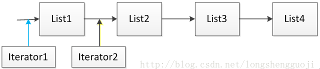
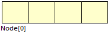
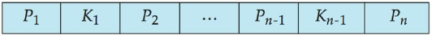

<!DOCTYPE html>
<html lang="en">
<head><meta name="generator" content="Hexo 3.8.0">
  <meta charset="utf-8">
  
  <title>Clamli</title>
  <meta name="viewport" content="width=device-width, initial-scale=1, maximum-scale=1">
  <meta name="description" content="1. Java 基础知识点1.1 面向对象的特性有哪些封装：把对象的属性和行为封装起来，只提供用户可操作属性和行为的接口而隐藏内部数据。 继承：复用已有的属性和行为（父类），添加新的属性和行为（子类）。 多态：程序中定义的引用变量所指向的具体类型和通过该引用变量发出的方法在编程时不确定，在程序运行期间才确定。如Parent p = new Child()，p向上转型为Parent类型，除了能够引用">
<meta property="og:type" content="website">
<meta property="og:title" content="Clamli">
<meta property="og:url" content="http://clamli.github.io/notes/index.html">
<meta property="og:site_name" content="Clamli">
<meta property="og:description" content="1. Java 基础知识点1.1 面向对象的特性有哪些封装：把对象的属性和行为封装起来，只提供用户可操作属性和行为的接口而隐藏内部数据。 继承：复用已有的属性和行为（父类），添加新的属性和行为（子类）。 多态：程序中定义的引用变量所指向的具体类型和通过该引用变量发出的方法在编程时不确定，在程序运行期间才确定。如Parent p = new Child()，p向上转型为Parent类型，除了能够引用">
<meta property="og:locale" content="en">
<meta property="og:image" content="http://clamli.github.io/notes/picture/jre.png">
<meta property="og:image" content="http://clamli.github.io/notes/picture/jdk.png">
<meta property="og:image" content="http://clamli.github.io/notes/picture/exception.png">
<meta property="og:image" content="http://clamli.github.io/notes/picture/iterator.png">
<meta property="og:image" content="http://clamli.github.io/notes/picture/hashmap1.png">
<meta property="og:image" content="http://clamli.github.io/notes/picture/concurrentMap.jpg">
<meta property="og:image" content="http://clamli.github.io/notes/picture/java-volatile.png">
<meta property="og:image" content="http://clamli.github.io/notes/picture/JVM.jpg">
<meta property="og:image" content="http://clamli.github.io/notes/picture/Java栈.jpg">
<meta property="og:image" content="http://clamli.github.io/notes/picture/IsolationLevel.png">
<meta property="og:image" content="http://clamli.github.io/notes/picture/B+treenode.png">
<meta property="og:image" content="http://clamli.github.io/notes/picture/leafnodeindex.png">
<meta property="og:image" content="http://clamli.github.io/notes/picture/B+tree.png">
<meta property="og:image" content="http://clamli.github.io/notes/picture/B树.png">
<meta property="og:image" content="http://clamli.github.io/notes/picture/B+树.png">
<meta property="og:image" content="http://clamli.github.io/notes/picture/memcached.png">
<meta property="og:image" content="http://clamli.github.io/notes/picture/rowoffsettable.png">
<meta property="og:image" content="http://clamli.github.io/notes/picture/extentstype.png">
<meta property="og:image" content="http://clamli.github.io/notes/picture/死锁.png">
<meta property="og:image" content="http://clamli.github.io/notes/picture/等待图.png">
<meta property="og:updated_time" content="2019-02-02T22:12:54.955Z">
<meta name="twitter:card" content="summary">
<meta name="twitter:title" content="Clamli">
<meta name="twitter:description" content="1. Java 基础知识点1.1 面向对象的特性有哪些封装：把对象的属性和行为封装起来，只提供用户可操作属性和行为的接口而隐藏内部数据。 继承：复用已有的属性和行为（父类），添加新的属性和行为（子类）。 多态：程序中定义的引用变量所指向的具体类型和通过该引用变量发出的方法在编程时不确定，在程序运行期间才确定。如Parent p = new Child()，p向上转型为Parent类型，除了能够引用">
<meta name="twitter:image" content="http://clamli.github.io/notes/picture/jre.png">
  
  
    <link rel="icon" href="/images/favicon.jpg">
  
  <link rel="stylesheet" href="/css/typing.css">
  <link rel="stylesheet" href="/css/donate.css">
  
</head>
</html>
  
    
      <body>
    
  
      <div id="container" class="container">
        <article id="page-" class="article article-type-page" itemscope="" itemprop="blogPost">
  <header id="header" class="header">
    <div class="mobile-nav">
      <h1 class="nickname">Boyi Li</h1>
      <a id="menu">
        &#9776; Menu
      </a>
    </div>
    
        <nav id="main-nav" class="main-nav nav-left">
    
    
      <a class="main-nav-link" href="/">Home</a>
    
      <a class="main-nav-link" href="/archives">Archives</a>
    
      <a class="main-nav-link" href="/notes">Notes</a>
    
      <a class="main-nav-link" href="/projects">Projects</a>
    
      <a class="main-nav-link" href="/resume">Resume</a>
    
      <a class="main-nav-link" href="/about">About</a>
    
  </nav>
</header>

  <hr>
  <div class="article-inner">
    
    
    <div class="article-entry typo" itemprop="articleBody">
      
        <h2 id="1-Java-基础知识点"><a href="#1-Java-基础知识点" class="headerlink" title="1. Java 基础知识点"></a>1. Java 基础知识点</h2><h4 id="1-1-面向对象的特性有哪些"><a href="#1-1-面向对象的特性有哪些" class="headerlink" title="1.1 面向对象的特性有哪些"></a>1.1 面向对象的特性有哪些</h4><p>封装：把对象的<strong>属性</strong>和<strong>行为</strong>封装起来，只提供用户可操作属性和行为的接口而隐藏内部数据。</p>
<p>继承：复用已有的属性和行为（父类），添加新的属性和行为（子类）。</p>
<p>多态：程序中定义的引用变量所指向的具体类型和通过该引用变量发出的方法在编程时不确定，在程序运行期间才确定。如<code>Parent p = new Child()</code>，p向上转型为Parent类型，除了能够引用父类的共性外，还可以使用子类强大的功能。</p>
<ul>
<li><p>Example:</p>
<figure class="highlight plain"><table><tr><td class="gutter"><pre><span class="line">1</span><br><span class="line">2</span><br><span class="line">3</span><br><span class="line">4</span><br><span class="line">5</span><br><span class="line">6</span><br><span class="line">7</span><br><span class="line">8</span><br><span class="line">9</span><br><span class="line">10</span><br><span class="line">11</span><br><span class="line">12</span><br><span class="line">13</span><br><span class="line">14</span><br><span class="line">15</span><br><span class="line">16</span><br><span class="line">17</span><br><span class="line">18</span><br><span class="line">19</span><br><span class="line">20</span><br><span class="line">21</span><br><span class="line">22</span><br><span class="line">23</span><br><span class="line">24</span><br><span class="line">25</span><br><span class="line">26</span><br><span class="line">27</span><br><span class="line">28</span><br><span class="line">29</span><br><span class="line">30</span><br><span class="line">31</span><br><span class="line">32</span><br><span class="line">33</span><br><span class="line">34</span><br><span class="line">35</span><br><span class="line">36</span><br><span class="line">37</span><br><span class="line">38</span><br></pre></td><td class="code"><pre><span class="line">public class Wine &#123;</span><br><span class="line">    public void fun1()&#123;</span><br><span class="line">        System.out.println(&quot;Wine 的Fun.....&quot;);</span><br><span class="line">        fun2();</span><br><span class="line">    &#125;</span><br><span class="line">    </span><br><span class="line">    public void fun2()&#123;</span><br><span class="line">        System.out.println(&quot;Wine 的Fun2...&quot;);</span><br><span class="line">    &#125;</span><br><span class="line">&#125;</span><br><span class="line"></span><br><span class="line">public class JNC extends Wine&#123;</span><br><span class="line">    /**</span><br><span class="line">     * @desc 子类重载父类方法</span><br><span class="line">     *        父类中不存在该方法，向上转型后，父类是不能引用该方法的</span><br><span class="line">     * @param a</span><br><span class="line">     * @return void</span><br><span class="line">     */</span><br><span class="line">    public void fun1(String a)&#123;</span><br><span class="line">        System.out.println(&quot;JNC 的 Fun1...&quot;);</span><br><span class="line">        fun2();</span><br><span class="line">    &#125;</span><br><span class="line">    </span><br><span class="line">    /**</span><br><span class="line">     * 子类重写父类方法</span><br><span class="line">     * 指向子类的父类引用调用fun2时，必定是调用该方法</span><br><span class="line">     */</span><br><span class="line">    public void fun2()&#123;</span><br><span class="line">        System.out.println(&quot;JNC 的Fun2...&quot;);</span><br><span class="line">    &#125;</span><br><span class="line">&#125;</span><br><span class="line"></span><br><span class="line">public class Test &#123;</span><br><span class="line">    public static void main(String[] args) &#123;</span><br><span class="line">        Wine a = new JNC();</span><br><span class="line">        a.fun1();</span><br><span class="line">    &#125;</span><br><span class="line">&#125;</span><br></pre></td></tr></table></figure>
<p>Output: </p>
<p>Wine 的Fun…</p>
<p>JNC 的Fun2…</p>
<p>原因：重载后的fun1(String a)和父类中的fun1()不是同一个方法，父类类型的引用可以调用父类中定义的所有属性和方法，不能调用只存在与子类中的方法和属性。</p>
</li>
</ul>
<h4 id="1-2-覆盖（重写）和重载"><a href="#1-2-覆盖（重写）和重载" class="headerlink" title="1.2 覆盖（重写）和重载"></a>1.2 覆盖（重写）和重载</h4><p>覆盖/重写（overriding）：子类重新定义了父类的方法，但保证<u>方法名相同</u>、<u>参数列表相同</u>、<u>返回类型相同</u></p>
<p>重载（overloading）：方法名一样，参数类型和个数不一样，返回值类型可以相同也可以不同。前两者为必须满足。</p>
<h4 id="1-3-抽象类和接口的区别"><a href="#1-3-抽象类和接口的区别" class="headerlink" title="1.3 抽象类和接口的区别"></a>1.3 抽象类和接口的区别</h4><p>抽象类：</p>
<figure class="highlight plain"><table><tr><td class="gutter"><pre><span class="line">1</span><br><span class="line">2</span><br><span class="line">3</span><br></pre></td><td class="code"><pre><span class="line">public abstract class Test &#123;</span><br><span class="line">    abstract void testAbstract(); //抽象方法</span><br><span class="line">&#125;</span><br></pre></td></tr></table></figure>
<p>* 只要类中有一个抽象方法，此类就被标记为抽象类</p>
<p>* 抽象方法没有方法体</p>
<p>* 抽象类被继承后要实现其中<strong>所有</strong>抽象方法，保证<u>方法名相同</u>、<u>参数列表相同</u>、<u>返回类型相同</u></p>
<ul>
<li><p>为什么接口会出现？</p>
<p>因为有抽象类存在，所有的子类都需要继承抽象类、实现抽象方法。如果当前子类不需要该抽象方法，会造成代码冗余，但也不能将该抽象方法放于其他类中，让该方法的子类继承那个类和抽象类，因为Java规定类不能继承多个父类。</p>
</li>
</ul>
<p>接口：</p>
<figure class="highlight plain"><table><tr><td class="gutter"><pre><span class="line">1</span><br><span class="line">2</span><br><span class="line">3</span><br></pre></td><td class="code"><pre><span class="line">public interface drawTest &#123;</span><br><span class="line">    void draw(); //接口内的方法，省略abstract关键字</span><br><span class="line">&#125;</span><br></pre></td></tr></table></figure>
<p>* 接口是抽象类的延伸（纯粹的抽象类），接口中所有的方法都没有方法体</p>
<p>* 接口中任何方法都是public和abstract的</p>
<p>* 接口中任何字段都是static和final的</p>
<p>上述的问题中，可以将部分子类要继承的方法放到接口中，这些子类实现该接口，同时也能继承父类。</p>
<ul>
<li><p>抽象类和接口如何选择？</p>
<p>* 优先定义接口</p>
<p>* 如果有多个接口实现有公用的部分，使用抽象类集成它们</p>
</li>
</ul>
<h4 id="1-4-Java-和-C-的区别"><a href="#1-4-Java-和-C-的区别" class="headerlink" title="1.4 Java 和 C++ 的区别"></a>1.4 Java 和 C++ 的区别</h4><h4 id="1-5-Java-中的值传递和引用传递"><a href="#1-5-Java-中的值传递和引用传递" class="headerlink" title="1.5 Java 中的值传递和引用传递"></a>1.5 Java 中的值传递和引用传递</h4><p><strong>值传递</strong></p>
<p>当一个参数通过值传递时，调用函数和被调用函数对同一个值有两个不同的变量来代表，如果被调函数改变了变量的值，调用函数无法获知改变。</p>
<p><strong>引用传递</strong></p>
<p>当一个参数通过引用传递时，调用函数和被调用函数使用相同的变量来表示同一个参数。如果被调用函数修改了参数的值，调用函数可以获得这个改变。</p>
<p><strong>Java是值传递</strong></p>
<p>Java传递的是地址引用的拷贝，所以Java还是值传递。</p>
<h4 id="1-6-JDK-中常用的包有哪些"><a href="#1-6-JDK-中常用的包有哪些" class="headerlink" title="1.6 JDK 中常用的包有哪些"></a>1.6 JDK 中常用的包有哪些</h4><p><strong>java.lang</strong></p>
<ul>
<li>Object类 </li>
<li>数据类型包装类：如Integer、Float、Boolean</li>
<li>Math类</li>
<li>String类 和StringBuffer类 </li>
<li>Thread类 </li>
<li>Throwable（所有错误和异常处理的父类），Exception（处理异常，需要用户捕获处理）和Error（处理硬件错误，不要求用户捕获处理）</li>
</ul>
<p><strong>java.util</strong></p>
<ul>
<li>日期类 </li>
<li>数据结构类：如LinkedList、Vector、Stack、Hashtable </li>
<li>随机数类 </li>
</ul>
<p><strong>java.awt</strong></p>
<ul>
<li>提供了绘图和图像类，主要用于编写GUI程序，包括按钮、标签等常用组件以及相应的事件类 </li>
</ul>
<p><strong>javax.swing</strong></p>
<ul>
<li>轻量级的窗口工具包，这是目前使用最广泛的GUI程序设计包 </li>
</ul>
<p><strong>java.io</strong></p>
<ul>
<li>提供了系统输入输出类和接口，只要包括输入流类InputStream和输出流OutputStream就可以实现文件的输入输出、管道的数据传输以及网络数据传输的功能 </li>
</ul>
<h4 id="1-7-JDK-JRE-和-JVM-的联系和区别"><a href="#1-7-JDK-JRE-和-JVM-的联系和区别" class="headerlink" title="1.7 JDK, JRE 和 JVM 的联系和区别"></a>1.7 JDK, JRE 和 JVM 的联系和区别</h4><p><strong>JVM: </strong>Java Virtual Machine</p>
<ul>
<li>a specification that provides a runtime environment in which Java bytecode can be executed.</li>
</ul>
<p><strong>JRE: </strong>Java Runtime Environment</p>
<ul>
<li><p>a set of software tools which are used for developing Java applications. It is used to provide the runtime environment. It is the implementation of JVM. It contains a set of libraries + other files that JVM uses at runtime. </p>
<p></p>
</li>
</ul>
<p><strong>JDK: </strong>Java Development Kit</p>
<ul>
<li><p>a software development environment which is used to develop Java applications and applets. It physically exists. It contains JRE + development tools.</p>
</li>
<li><p>The JDK contains a private Java Virtual Machine (JVM) and a few other resources such as an interpreter/loader (java), a compiler (javac), an archiver (jar), a documentation generator (Javadoc), etc. to complete the development of a Java Application.</p>
<p></p>
</li>
</ul>
<p><em>Note: 如果已经安装了 JDK，就没有必要安装 JRE了，因为 JDK中通常包括 JRE。当客户端想要执行 Java程序而不需要考虑编译时，只需要安装 JRE即可，可以减少存储占用。</em></p>
<h4 id="1-8-Java-中的异常"><a href="#1-8-Java-中的异常" class="headerlink" title="1.8 Java 中的异常"></a>1.8 Java 中的异常</h4><p>Throwable为所有异常的顶层父类，派生出Error类和Exception类。</p>
<ul>
<li><p><em>Error类</em>：很少出现，代表JVM本身的错误，不能通过代码解决。</p>
<p> <em>Exception类</em>：代表程序运行时发送的各种不期望发生的事件，可以被Java异常处理机制使用，是异常处理的    核心。</p>
<p> </p>
</li>
<li><p>非检查异常（unchecked exception）：Error + Runtime Exception。这些异常在编译时，<strong>不会</strong>被提示或者发现。这些异常可以通过手动使用try+catch+finally来处理，但对于这些异常，正确的方法应该是修改代码，而不是通过异常处理器处理。</p>
</li>
<li>检查异常（checked exception）：IOException。这些异常要求程序员强制做预备处理工（try+catch+finally or throws），否则编译不通过。该异常通常是由于程序运行环境造成，由于程序可能运行在未知环境下，因此使用这些异常为未知做准备。</li>
</ul>
<p><em>try</em>：</p>
<ul>
<li>try中放可能发生异常的代码。</li>
<li>如果执行完try且不发生异常，则接着执行finally和finally后面的代码。</li>
<li>如果发生异常，先匹配catch块。</li>
</ul>
<p><em>catch</em>：</p>
<ul>
<li>异常匹配按照catch块的顺序从上往下寻找，只有第一个匹配的catch会得到执行。</li>
<li>匹配时支持父类匹配，因此如果同意try块下有多个catch异常类型有父子关系，应该将子类异常放在前面，父类异常放在后面。（这样子类异常不会匹配到父类的catch块中去）</li>
</ul>
<p><em>finally</em>：</p>
<ul>
<li>可选块。</li>
<li>无论异常是否发生，异常是否匹配被处理，finally块都会被执行。</li>
<li>一个try块至少要有一个catch块，否则，至少要有一个finally块。</li>
<li>finally主要做一些清理工作，如流的关闭，数据库连接的关闭。</li>
<li>如果在catch里有return语句且异常被匹配，那么在return之前会先做完finally块的内容。</li>
</ul>
<p><em>throws 函数声明</em>：</p>
<ul>
<li>如果一个方法内部代码抛出检查异常（checked exception），而方法自己没有处理（单纯用throw异常抛出语句抛出），则必须使用throws关键字声明可能抛出的异常，否则无法通过编译</li>
<li>throws是另一种处理异常方式，不同于try+catch+finally，throws仅仅将函数中可能出现的异常向<strong>调用者</strong>声明，自己不具体处理。</li>
</ul>
<p><em>throw异常抛出语句</em>：</p>
<ul>
<li>使用throw语句手动抛出异常，<code>throw Exception Object</code>。</li>
<li>throw语句写在函数中，执行throw语句的地方就是一个异常抛出点。</li>
</ul>
<p><em>throws 和 throw的异同:</em></p>
<ul>
<li><p>throw用在方法体内,用来抛出一个异常：<code>throw Exception Object</code></p>
</li>
<li><p>throws用在方法声明后面,用来告知此方法可能抛出的异常，方法调用者需要处理上述异常</p>
<figure class="highlight plain"><table><tr><td class="gutter"><pre><span class="line">1</span><br></pre></td><td class="code"><pre><span class="line">public void func() throws Exception1, Exception2, ... &#123;&#125;</span><br></pre></td></tr></table></figure>
</li>
<li><p>两者都是消极处理异常的方式，只是抛出或者可能抛出异常，但是不会由函数去处理异常，真正的处理异常由函数的上层调用来做</p>
</li>
</ul>
<p><em>异常注意事项</em>：</p>
<ol>
<li>当子类重写父类带有throws声明的函数时，用于处理父类throws方法的异常处理器也必须适用于子类这个带throws的方法，为了支持多态。例如，父类throws 2个异常，子类就不能throws 2个以上的异常。父类throws IOException，子类就必须throws IOException或者其子类。</li>
<li>finally中的return 会覆盖 try 或者catch中的返回值，finally中的return会抑制（消灭）前面try或者catch块中的异常，finally中的异常会覆盖（消灭）前面try或者catch中的异常。因此不要在finally中使用return！！！尽量将所有的return都放到try+catch+finally外，而不是里面。</li>
</ol>
<h4 id="1-9-Java-中的迭代器"><a href="#1-9-Java-中的迭代器" class="headerlink" title="1.9 Java 中的迭代器"></a>1.9 Java 中的迭代器</h4><p>Iterator 是常用的遍历 Collection的方法之一。它最早在 Java 1.2 里被提出，用作 Enumerations 的替代。它具有一下特性：</p>
<ul>
<li>引入了更符合规范的方法名</li>
<li>遍历 Collection 时允许删除操作</li>
<li>不保证遍历顺序</li>
</ul>
<p><strong>使用 Iterator 的步骤</strong></p>
<p></p>
<ol>
<li><p>获取 Collection 的 Iterator（最开始为 Iterator1 的位置）</p>
<figure class="highlight plain"><table><tr><td class="gutter"><pre><span class="line">1</span><br><span class="line">2</span><br></pre></td><td class="code"><pre><span class="line">List&lt;Object&gt; items = ...</span><br><span class="line">Iterator&lt;Object&gt; iter = items.iterator();</span><br></pre></td></tr></table></figure>
</li>
<li><p>hasNext(): 查看是否还有未迭代到的元素</p>
<figure class="highlight plain"><table><tr><td class="gutter"><pre><span class="line">1</span><br><span class="line">2</span><br><span class="line">3</span><br></pre></td><td class="code"><pre><span class="line">while (iter.hasNext()) &#123;</span><br><span class="line">    // ...</span><br><span class="line">&#125;</span><br></pre></td></tr></table></figure>
</li>
<li><p>next(): 返回指针指向的元素，指针下移</p>
<figure class="highlight plain"><table><tr><td class="gutter"><pre><span class="line">1</span><br></pre></td><td class="code"><pre><span class="line">Object next = iter.next()</span><br></pre></td></tr></table></figure>
</li>
<li><p>remove(): 删除上次调用next方法时返回的元素</p>
<figure class="highlight plain"><table><tr><td class="gutter"><pre><span class="line">1</span><br></pre></td><td class="code"><pre><span class="line">iter.remove()</span><br></pre></td></tr></table></figure>
</li>
</ol>
<p><strong>迭代器删除</strong></p>
<figure class="highlight plain"><table><tr><td class="gutter"><pre><span class="line">1</span><br><span class="line">2</span><br><span class="line">3</span><br><span class="line">4</span><br></pre></td><td class="code"><pre><span class="line">while (it.hasNext()) &#123;</span><br><span class="line">    Object obj = it.next();</span><br><span class="line">    it.remove();</span><br><span class="line">&#125;</span><br></pre></td></tr></table></figure>
<p><em># ArrayList 为什么要实现自己的迭代器</em></p>
<ul>
<li>使用范围不同，Iterator 可以应用于所有的集合，Set、List 和 Map 和这些集合的子类型。而 ListIterator 只能用于List及其子类型。</li>
<li>ListIterator 有add方法，可以向List中添加对象，有set()方法，可以实现对象修改。</li>
<li>ListIterator 有 hasPrevious() 和 previous() 方法，可以实现逆向（顺序向前）遍历。</li>
<li>ListIterator 可以定位当前索引的位置，nextIndex() 和 previousIndex() 可以实现。</li>
</ul>
<h2 id="2-Java-常见集合"><a href="#2-Java-常见集合" class="headerlink" title="2. Java 常见集合"></a>2. Java 常见集合</h2><ul>
<li><em>Collection</em>接口的子接口包括：<em>Set</em>接口和<em>List</em>接口<ul>
<li><em>Set</em>接口</li>
<li><em>List</em>接口</li>
</ul>
</li>
<li><em>Map</em>接口的实现类主要有：<a href="#2.1"><em>HashMap</em></a>, <a href="(#2.2"><em>TreeMap</em></a>), <a href="#2.3"><em>ConcurrentHashMap</em></a>, <a href="#2.4"><em>HashTable</em></a>以及<a href="#2.5"><em>Properties</em></a>等</li>
<li><em>Set</em>接口的实现类主要有：<a href="#2.6"><em>HashSet</em></a>, <a href="#2.7"><em>TreeSet</em></a>, <a href="#2.8"><em>LinkedHashSet</em></a>等</li>
<li><em>List</em>接口的实现类主要有：<a href="#2.9"><em>ArrayList</em></a>, <a href="#2.10"><em>LinkedList</em></a>, <a href="#2.11"><em>Stack</em></a>以及<a href="#2.12"><em>Vector</em></a>等</li>
</ul>
<h4 id="2.1">2.1 HashMap</h4>

<p><em># HashMap</em> 是什么？</p>
<ul>
<li><p>HashMap继承于AbstractMap抽象类，实现Cloneable和Serializable接口，以 (Key, Value) 对的形式保存数据。</p>
</li>
<li><p>HashMap内部包含了一个Node数组，如下图所示。Node数组是一个包含四个元素的类，其中有一个元素为Node对象的引用，因此每一个Node都是一个linked list。</p>
<p><em>HashMap:</em></p>
<p></p>
<p><em>Node:</em></p>
<figure class="highlight plain"><table><tr><td class="gutter"><pre><span class="line">1</span><br><span class="line">2</span><br><span class="line">3</span><br><span class="line">4</span><br><span class="line">5</span><br><span class="line">6</span><br></pre></td><td class="code"><pre><span class="line">Class Node &#123;</span><br><span class="line">    int hash;</span><br><span class="line">    K key;</span><br><span class="line">    V value;</span><br><span class="line">    Node next;</span><br><span class="line">&#125;</span><br></pre></td></tr></table></figure>
</li>
</ul>
<p><em># HashMap的两个参数</em></p>
<ul>
<li>Initial Capacity: 决定了HashMap的初始大小</li>
<li>Load Factor: 决定了HashMap填充到何种程度时进行rehash，一般设定为0.75</li>
</ul>
<p><em># 怎么让 HashMap Synchronized ?</em> </p>
<p>HashMap是unsynchronized类，因此有多个线程要同时操作同一个HashMap对象并涉及到值的更改时，需要先将其Synchronized。常见方法：</p>
<figure class="highlight plain"><table><tr><td class="gutter"><pre><span class="line">1</span><br></pre></td><td class="code"><pre><span class="line">Map m = Collections.synchronizedMap(new HashMap(...));</span><br></pre></td></tr></table></figure>
<p><em># Hashing 是怎么工作的？</em></p>
<ul>
<li><p>hashCode(): 用来得到对象的hash值，以此确定对象应该放在哪个下标对应的bucket中 (bucket就是一个Node对象构成的linked list)。</p>
</li>
<li><p>equals(): 用于确定两个对象是否相等。</p>
<p>Hashing首先利用hashCode()得到对象的hash值，确定对象的下标，然后用equals()比较对象和下标对应的bucket中的对象是否相等。若相等，则原Map中存在当前对象，反之则不存在。所有put, remove, containsKey等操作都是基于此。</p>
</li>
</ul>
<p><em># HashMap 在 Java  8中的变化</em></p>
<ol>
<li>由于对象在HashMap中是存储于每个下标对应的linked list中，因此查找时最坏时间复杂度为$O(N)$。为了解决这个问题，Java 8中提出了平衡树（红黑树）的结构来存储linked list中的元素。当HashMap中元素个数达到一定程度后（&gt;8），原来的线性链表结构会转化成平衡树结构，以达到$O(log N)$的时间复杂度。</li>
<li>扩容机制发生改变。在 Java 7 中，扩容时现存元素的位置不发生改变（头插法，在链表中的位置可能发生改变）；在 Java 8 中，扩容后原元素的位置可能不发生改变，也可能为原位置+扩容前容量，取决于hash值高位的bit是0还是1。</li>
</ol>
<h4 id="2.2">2.2 TreeMap</h4>

<h4 id="2.3">2.3 ConcurrentHashMap</h4>

<p><em># 为什么我们需要 ConcurrentHashMap?</em></p>
<ul>
<li>HashMap的实现不是线程安全的</li>
<li>HashTable的实现是线程安全，但是代价太高</li>
</ul>
<p><em># ConcurrentHashMap是什么？</em></p>
<p>ConcurrentHashMap 类中包含两个静态内部类 HashEntry 和 Segment。HashEntry 用来封装映射表的键 / 值对；Segment 用来充当锁的角色，每个 Segment 对象守护整个散列映射表的若干个桶。每个桶是由若干个 HashEntry 对象链接起来的链表。一个 ConcurrentHashMap 实例中包含由若干个 Segment 对象组成的数组。ConcurrentHashMap 在默认并发级别会创建包含 16 个 Segment 对象的数组。每个 Segment 的成员对象 table 包含若干个散列表的桶。每个桶是由 HashEntry 链接起来的一个链表。如果键能均匀散列，每个 Segment 大约守护整个散列表中桶总数的 1/16。ConcurrentHashMap 允许完全并发的读取，并且支持给定数量的并发更新。</p>
<p></p>
<p><em># ConcurrentHashMap分离锁的细节</em></p>
<p>在 ConcurrentHashMap 中，线程对映射表做读操作时，一般情况下不需要加锁就可以完成，对容器做结构性修改的操作才需要加锁。加锁操作是针对（键的 hash 值对应的）某个具体的 Segment，锁定的是该 Segment 而不是整个 ConcurrentHashMap。当一个Segment被加锁时，其他写线程对另外 15 个Segment 的加锁并不会因为当前线程对这个 Segment 的加锁而阻塞。同时，所有读线程几乎不会因本线程的加锁而阻塞（除非读线程刚好读到这个 Segment 中某个 HashEntry 的 value 域的值为 null，此时需要加锁后重新读取该值）。</p>
<h4 id="2.4">2.4 HashTable</h4>

<h4 id="2.5">2.5 Properties</h4>

<h4 id="2.6">2.6 HashSet</h4>

<h4 id="2.7">2.7 TreeSet</h4>

<h4 id="2.8">2.8 LinkedHashSet</h4>

<h4 id="2.9">2.9 ArrayList</h4>

<h4 id="2.10">2.10 LinkedList</h4>

<h4 id="2.11">2.11 Stack</h4>

<h4 id="2.12">2.12 Vector</h4>

<p># 相关问题</p>
<ul>
<li><p><em>HashMap</em>和<em>HashTable</em>的区别有哪些？</p>
<ol>
<li>Hashtable继承自Dictionary，而HashMap继承自AbstractMap。</li>
<li>HashMap是unsynchronized，非线程安全；HashTable是Synchronized，线程安全。</li>
<li>HashMap允许出现null的key和value，而HashTable的key和value均不可为null，如果key==null，运行时会抛出NullPointerException异常。</li>
<li>HashMap把Hashtable的contains方法去掉了，改成containsValue和containsKey；Hashtable则保留了contains，containsValue和containsKey三个方法，其中contains和containsValue功能相同。</li>
</ol>
</li>
<li><p><em>ConcurrentHashMap</em>的具体实现</p>
</li>
<li><p><em>HashMap</em>的长度为什么是2的幂次方？</p>
<p>在计算索引时，我们一般采取h % length的方式，当length是2的幂次时，h % length=h &amp; (length - 1) ，将取余运算转化为按位运算，提高运算效率。</p>
</li>
<li><p><em>List</em>和<em>Set</em>的区别是什么？</p>
</li>
<li><p><em>List</em>, <em>Set</em>和<em>Map</em>的初始容量和加载因子</p>
</li>
<li><p><em>Comparable</em>接口和<em>Comparator</em>接口有什么区别？</p>
</li>
<li><p><em>Java</em>集合的快速失败机制<em>“fail - fast”</em></p>
</li>
</ul>
<h2 id="3-高并发编程（JUC包）"><a href="#3-高并发编程（JUC包）" class="headerlink" title="3. 高并发编程（JUC包）"></a>3. 高并发编程（JUC包）</h2><h4 id="3-1-多线程和单线程的区别和联系"><a href="#3-1-多线程和单线程的区别和联系" class="headerlink" title="3.1 多线程和单线程的区别和联系"></a>3.1 多线程和单线程的区别和联系</h4><h4 id="3-2-如何指定多个线程的执行顺序"><a href="#3-2-如何指定多个线程的执行顺序" class="headerlink" title="3.2 如何指定多个线程的执行顺序"></a>3.2 如何指定多个线程的执行顺序</h4><h4 id="3-3-线程和进程的区别"><a href="#3-3-线程和进程的区别" class="headerlink" title="3.3 线程和进程的区别"></a>3.3 线程和进程的区别</h4><p><strong>Process</strong></p>
<p>Each process provides the resources needed to execute a program. A process has a virtual address space, executable code, open handles to system objects, a security context, a unique process identifier, environment variables, a priority class, minimum and maximum working set sizes, and at least one thread of execution. Each process is started with a single thread, often called the primary thread, but can create additional threads from any of its threads.</p>
<p><strong>Thread</strong></p>
<p>A thread is the entity within a process that can be scheduled for execution. All threads of a process share its virtual address space and system resources. In addition, each thread maintains exception handlers, a scheduling priority, thread local storage, a unique thread identifier, and a set of structures the system will use to save the thread context until it is scheduled. The thread context includes the thread’s set of machine registers, the kernel stack, a thread environment block, and a user stack in the address space of the thread’s process. Threads can also have their own security context, which can be used for impersonating clients.</p>
<h4 id="3-4-多线程产生死锁的4个必要条件"><a href="#3-4-多线程产生死锁的4个必要条件" class="headerlink" title="3.4 多线程产生死锁的4个必要条件"></a>3.4 多线程产生死锁的4个必要条件</h4><h4 id="3-5-sleep-和wait-n-wait-的区别"><a href="#3-5-sleep-和wait-n-wait-的区别" class="headerlink" title="3.5 sleep()和wait(n), wait()的区别"></a>3.5 <em>sleep()</em>和<em>wait(n)</em>, <em>wait()</em>的区别</h4><h4 id="3-6-synchronized关键字"><a href="#3-6-synchronized关键字" class="headerlink" title="3.6 synchronized关键字"></a>3.6 <em>synchronized</em>关键字</h4><p>当多个线程访问同一个变量时，可用synchronized关键字来保证访问次序，避免冲突。被synchronized修饰的代码段在同一时刻只能被一个线程执行。</p>
<p>synchronized关键字可以被用在三个层次</p>
<ul>
<li><p>实例方法</p>
<figure class="highlight plain"><table><tr><td class="gutter"><pre><span class="line">1</span><br><span class="line">2</span><br><span class="line">3</span><br></pre></td><td class="code"><pre><span class="line">public synchronized void synchronisedCalculate() &#123;</span><br><span class="line">    setSum(getSum() + 1);</span><br><span class="line">&#125;</span><br></pre></td></tr></table></figure>
</li>
<li><p>静态方法</p>
<figure class="highlight plain"><table><tr><td class="gutter"><pre><span class="line">1</span><br><span class="line">2</span><br><span class="line">3</span><br></pre></td><td class="code"><pre><span class="line">public static synchronized void syncStaticCalculate() &#123;</span><br><span class="line">    staticSum = staticSum + 1;</span><br><span class="line">&#125;</span><br></pre></td></tr></table></figure>
</li>
<li><p>代码块</p>
<p>inside non-static method</p>
<figure class="highlight plain"><table><tr><td class="gutter"><pre><span class="line">1</span><br><span class="line">2</span><br><span class="line">3</span><br><span class="line">4</span><br><span class="line">5</span><br></pre></td><td class="code"><pre><span class="line">public void performSynchrinisedTask() &#123;</span><br><span class="line">    synchronized (this) &#123;</span><br><span class="line">        setCount(getCount()+1);</span><br><span class="line">    &#125;</span><br><span class="line">&#125;</span><br></pre></td></tr></table></figure>
<p>inside static method</p>
<figure class="highlight plain"><table><tr><td class="gutter"><pre><span class="line">1</span><br><span class="line">2</span><br><span class="line">3</span><br><span class="line">4</span><br><span class="line">5</span><br></pre></td><td class="code"><pre><span class="line">public static void performStaticSyncTask()&#123;</span><br><span class="line">    synchronized (SynchronisedBlocks.class) &#123;</span><br><span class="line">        setStaticCount(getStaticCount() + 1);</span><br><span class="line">    &#125;</span><br><span class="line">&#125;</span><br></pre></td></tr></table></figure>
</li>
</ul>
<h4 id="3-7-volatile关键字"><a href="#3-7-volatile关键字" class="headerlink" title="3.7 volatile关键字"></a>3.7 <em>volatile</em>关键字</h4><p>volatile关键字用来标识被修饰变量是“存储在主存中”。也就是说，该变量会被从主存中读出，并写回到主存中。volatile关键字保证了对变量的修改在不同线程中都可见。</p>
<p></p>
<p>如上图所示，在多线程应用中，若计算机有多个CPU，不同线程可能运行在不同的CPU上，使用不同的CPU缓存。若使用non-volatile变量，无法保证 JVM 什么时候将主存中的数据读入CPU缓存，也无法保证什么时候将缓存中的数据写入CPU主存。这会导致在某一线程中更新的变量不一定在另一线程中可见。</p>
<p><strong>Full volatile Visibility Guarantee</strong></p>
<ul>
<li>If Thread A writes to a volatile variable and Thread B subsequently reads the same volatile variable, then all variables visible to Thread A before writing the volatile variable, will also be visible to Thread B after it has read the volatile variable.</li>
<li>If Thread A reads a volatile variable, then all all variables visible to Thread A when reading the volatile variable will also be re-read from main memory.</li>
</ul>
<p><strong>Java volatile Happens-Before Guarantee</strong></p>
<ul>
<li>Reads from and writes to other variables cannot be reordered to occur after a write to a volatile variable, if the reads / writes originally occurred before the write to the volatile variable.</li>
<li>Reads from and writes to other variables cannot be reordered to occur before a read of a volatile variable, if the reads / writes originally occurred after the read of the volatile variable. </li>
</ul>
<p>volatile关键字在以下两个方面影响效率</p>
<ul>
<li>读写主存远比读写缓存代价更大。</li>
<li>volatile阻止了指令重排，而指令重排是提高效率的方法之一。</li>
</ul>
<h4 id="3-8-ThreadLocal（线程局部变量）关键字"><a href="#3-8-ThreadLocal（线程局部变量）关键字" class="headerlink" title="3.8 ThreadLocal（线程局部变量）关键字"></a>3.8 <em>ThreadLocal</em>（线程局部变量）关键字</h4><p><strong>ThreadLocal的使用场景</strong></p>
<p>如，对于涉及到多线程的数据库连接操作，如果对数据库连接和关闭进行同步，会大大影响效率。如果在数据库连接的方法中才创建数据库连接，在方法调用完毕后再关闭连接，则会产生频繁的数据库开启关闭，严重影响执行效率。可否对让每一个需要数据库连接的线程有一个connect变量，让各线程之间对connect变量的访问没有依赖关系，这样线程在使用该变量时就不需要考虑其它线程是否使用了相同变量。</p>
<p><strong>ThreadLocal提供的方法</strong></p>
<ul>
<li><code>public T get() { }</code>: 获取ThreadLocal在当前线程中保存的变量副本</li>
<li><code>public void set(T value) { }</code>: 设置当前线程中变量的副本</li>
<li><code>public void remove() { }</code>: remove()用来移除当前线程中变量的副本</li>
<li><code>protected T initialValue() { }</code>: 初始化ThreadLocal变量</li>
</ul>
<p><strong>ThreadLocal和线程本地变量的区别</strong></p>
<p>此段代码中count线程不安全</p>
<figure class="highlight plain"><table><tr><td class="gutter"><pre><span class="line">1</span><br><span class="line">2</span><br><span class="line">3</span><br><span class="line">4</span><br><span class="line">5</span><br><span class="line">6</span><br><span class="line">7</span><br><span class="line">8</span><br><span class="line">9</span><br><span class="line">10</span><br><span class="line">11</span><br><span class="line">12</span><br><span class="line">13</span><br><span class="line">14</span><br></pre></td><td class="code"><pre><span class="line">public class TestRunable implements Runnable &#123;  </span><br><span class="line">    private int count = 0;  </span><br><span class="line">    @Override  </span><br><span class="line">    public void run() &#123;  </span><br><span class="line">       ...  </span><br><span class="line">    &#125;  </span><br><span class="line">&#125;  </span><br><span class="line">public static void main(String[] args) &#123;  </span><br><span class="line">    TestRunable runable = new TestRunable();  </span><br><span class="line">    Thread a = new Thread(runable, &quot;a&quot;);  </span><br><span class="line">    Thread b = new Thread(runable, &quot;b&quot;);  </span><br><span class="line">    a.start();  </span><br><span class="line">    b.start();  </span><br><span class="line">&#125;</span><br></pre></td></tr></table></figure>
<p>此段代码中count线程安全</p>
<figure class="highlight plain"><table><tr><td class="gutter"><pre><span class="line">1</span><br><span class="line">2</span><br><span class="line">3</span><br><span class="line">4</span><br><span class="line">5</span><br><span class="line">6</span><br><span class="line">7</span><br><span class="line">8</span><br><span class="line">9</span><br><span class="line">10</span><br><span class="line">11</span><br><span class="line">12</span><br><span class="line">13</span><br><span class="line">14</span><br></pre></td><td class="code"><pre><span class="line">public class TestRunable implements Runnable &#123;  </span><br><span class="line">    private ThreadLocal&lt;Integer&gt; count = new ThreadLocal&lt;Integer&gt;();  </span><br><span class="line">    @Override  </span><br><span class="line">    public void run() &#123;  </span><br><span class="line">        ...  </span><br><span class="line">    &#125;  </span><br><span class="line">&#125;  </span><br><span class="line">public static void main(String[] args) &#123;  </span><br><span class="line">    TestRunable runable = new TestRunable();  </span><br><span class="line">    Thread a = new Thread(runable, &quot;a&quot;);  </span><br><span class="line">    Thread b = new Thread(runable, &quot;b&quot;);  </span><br><span class="line">    a.start();  </span><br><span class="line">    b.start();  </span><br><span class="line">&#125;</span><br></pre></td></tr></table></figure>
<p>ThreadLocal 变量只和线程有关，相当于为每一个线程提供一个独立的变量副本。</p>
<h4 id="3-9-Atomic关键字"><a href="#3-9-Atomic关键字" class="headerlink" title="3.9 Atomic关键字"></a>3.9 <em>Atomic</em>关键字</h4><p><strong>使用Atomic关键字的原因</strong></p>
<ul>
<li>如果有两个或多个线程同时获取和更新同一个变量，可能会导致数据的丢失。</li>
<li>使用锁（synchronized和volatile）能够解决问题，可是会降低效率，因为同一时刻只能有一个线程获取数据。</li>
</ul>
<p>Atomic操作使用CAS（compare-and-swap） 来确保数据完整性，避免阻塞进程。</p>
<p><strong>CAS（compare-and-swap）是什么？</strong></p>
<p>CAS是下面这段代码的原子操作</p>
<figure class="highlight plain"><table><tr><td class="gutter"><pre><span class="line">1</span><br><span class="line">2</span><br><span class="line">3</span><br><span class="line">4</span><br><span class="line">5</span><br><span class="line">6</span><br><span class="line">7</span><br></pre></td><td class="code"><pre><span class="line">function cas(p : pointer to int, old : int, new : int) returns bool &#123;</span><br><span class="line">    if *p ≠ old &#123;</span><br><span class="line">        return false</span><br><span class="line">    &#125;</span><br><span class="line">    *p ← new</span><br><span class="line">    return true</span><br><span class="line">&#125;</span><br></pre></td></tr></table></figure>
<p>使用CAS的操作从内存中读出数据并记住，然后根据该数据计算出新数据，在写回时先比对内存中数据是否和原始读出数据一致，如果一致，即将新数据写入内存，否则，可采用 exponential backoff 的机制重复执行相同操作（读取并写回）。</p>
<p>当多线程使用CAS更新同一个变量时，每次只能有一个线程成功。和锁不同的是，其它线程不会被阻塞，它们会被告知更新操作没有成功，并去执行其它操作。当成功的线程完成变量值更新后，其它线程可再次尝试更新变量。如下述代码所示为一个常见的原子自增操作：</p>
<figure class="highlight plain"><table><tr><td class="gutter"><pre><span class="line">1</span><br><span class="line">2</span><br><span class="line">3</span><br><span class="line">4</span><br><span class="line">5</span><br><span class="line">6</span><br><span class="line">7</span><br><span class="line">8</span><br><span class="line">9</span><br><span class="line">10</span><br><span class="line">11</span><br><span class="line">12</span><br><span class="line">13</span><br><span class="line">14</span><br><span class="line">15</span><br><span class="line">16</span><br></pre></td><td class="code"><pre><span class="line">public class SafeCounterWithoutLock &#123;</span><br><span class="line">    private final AtomicInteger counter = new AtomicInteger(0);</span><br><span class="line">     </span><br><span class="line">    public int getValue() &#123;</span><br><span class="line">        return counter.get();</span><br><span class="line">    &#125;</span><br><span class="line">    public void increment() &#123;</span><br><span class="line">        while(true) &#123;</span><br><span class="line">            int existingValue = getValue();</span><br><span class="line">            int newValue = existingValue + 1;</span><br><span class="line">            if(counter.compareAndSet(existingValue, newValue)) &#123;</span><br><span class="line">                return;</span><br><span class="line">            &#125;</span><br><span class="line">        &#125;</span><br><span class="line">    &#125;</span><br><span class="line">&#125;</span><br></pre></td></tr></table></figure>
<h4 id="3-10-线程池"><a href="#3-10-线程池" class="headerlink" title="3.10 线程池"></a>3.10 线程池</h4><h2 id="4-JVM-内存管理"><a href="#4-JVM-内存管理" class="headerlink" title="4. JVM 内存管理"></a>4. JVM 内存管理</h2><h4 id="4-1-JVM-内存划分"><a href="#4-1-JVM-内存划分" class="headerlink" title="4.1 JVM 内存划分"></a>4.1 JVM 内存划分</h4><p><em># JVM 内存是指那一部分？</em></p>
<p></p>
<p>如上图所示，Java源代码被编译为字节码文件后进入JVM，由类加载器加载对应类的字节码文件，然后交由JVM引擎执行。在执行过程中用来存储所需数据的内容的空间，被叫做Runtime Data Area (运行时数据区)，也就是常说的JVM内存。</p>
<p><em># Runtime Data Area 分成哪几部分，分别的作用是什么？</em></p>
<ul>
<li><p>程序计数器（Program Counter Register）：程序计数器也叫PC寄存器，是用来存储程序当前执行指令的地址（或下一条指令的起始地址）的寄存器。CPU要执行当前指令时，通过程序计数器获得当前指令所在存储单元的地址，从地址中获得当前需要执行的指令，然后将程序计数器移到下一指令的地址处。当有多个线程时，每个线程含有独立的程序计数器；当执行native方法时，程序计数器中的值undefined。</p>
</li>
<li><p>Java栈（Java Virtual Machine Stack）：Java栈是Java方法执行的内存模型。结构如下：</p>
<p></p>
<p>每一个栈帧中对应一个被调用的方法，栈帧包含的内容有：</p>
<ul>
<li>局部变量表（Local Variables）：存储方法中的<strong>局部变量</strong>（非静态变量（值或引用）和函数形参），在编译器就可确定大小，在程序执行过程中大小不变。</li>
<li>操作数栈（Operand Stack）：执行程序中所有计算过程。</li>
<li>当前方法的运行时常量池：方法执行过程中需要用到类中的常量，用当前引用指向运行时常量。</li>
<li>方法返回地址</li>
<li>附加信息</li>
</ul>
<p>Java栈也是线程私有的。</p>
</li>
<li><p>本地方法栈（Native Method Stack）：本地方法栈和Java栈类似。Java栈用来执行Java方法，本地方法栈用来执行本地方法。所谓本地方法，即Java用来调用非Java代码的接口。执行这些方法时不影响到Java栈，只需要简单动态连接并直接调用本地方法。</p>
</li>
<li><p>堆（Heap）：Java堆内存存储<strong>对象本身</strong>和<strong>数组</strong>（数组的引用存储在Java栈中）。堆中的空间由Java垃圾回收机制自动处理。Java堆是被线程共享的。</p>
</li>
<li><p>方法区（Method Area）：方法区中存储了类的信息（名称、方法信息、字段信息）、<strong>静态变量</strong>、<strong>常量</strong>和编译器编译后的代码等。方法区中包含了运行时常量池，它包括类或接口的常量池的运行时表示，以及运行期间产生的新的常量。方法区是线程共享的，且不强制实现垃圾回收。</p>
</li>
</ul>
<h4 id="4-2-类似-Xms-Xmn这些参数的含义"><a href="#4-2-类似-Xms-Xmn这些参数的含义" class="headerlink" title="4.2 类似-Xms, -Xmn这些参数的含义"></a>4.2 类似-Xms, -Xmn这些参数的含义</h4><h4 id="4-3-垃圾回收算法"><a href="#4-3-垃圾回收算法" class="headerlink" title="4.3 垃圾回收算法"></a>4.3 垃圾回收算法</h4><h4 id="4-4-root搜索算法中，那些可以作为root"><a href="#4-4-root搜索算法中，那些可以作为root" class="headerlink" title="4.4 root搜索算法中，那些可以作为root"></a>4.4 <em>root</em>搜索算法中，那些可以作为<em>root</em></h4><h4 id="4-5-GC什么时候开始"><a href="#4-5-GC什么时候开始" class="headerlink" title="4.5 GC什么时候开始"></a>4.5 <em>GC</em>什么时候开始</h4><h4 id="4-6-内存泄漏和内存溢出"><a href="#4-6-内存泄漏和内存溢出" class="headerlink" title="4.6 内存泄漏和内存溢出"></a>4.6 内存泄漏和内存溢出</h4><h2 id="5-Java-8-知识点"><a href="#5-Java-8-知识点" class="headerlink" title="5. Java 8 知识点"></a>5. Java 8 知识点</h2><h4 id="5-1-HashMap的底层实现有变化"><a href="#5-1-HashMap的底层实现有变化" class="headerlink" title="5.1 HashMap的底层实现有变化"></a>5.1 HashMap的底层实现有变化</h4><ol>
<li>由于对象在HashMap中是存储于每个下标对应的linked list中，因此查找时最坏时间复杂度为$O(N)$。为了解决这个问题，Java 8中提出了平衡树（红黑树）的结构来存储linked list中的元素。当HashMap中元素个数达到一定程度后（&gt;8），原来的线性链表结构会转化成平衡树结构，以达到$O(log N)$的时间复杂度。</li>
<li>扩容机制发生改变。在 Java 7 中，扩容时现存元素的位置不发生改变（头插法，在链表中的位置可能发生改变）；在 Java 8 中，扩容后原元素的位置可能不发生改变，也可能为原位置+扩容前容量，取决于hash值高位的bit是0还是1。</li>
</ol>
<h4 id="5-2-JVM内存管理方面，由元空间替代了永久代"><a href="#5-2-JVM内存管理方面，由元空间替代了永久代" class="headerlink" title="5.2 JVM内存管理方面，由元空间替代了永久代"></a>5.2 JVM内存管理方面，由元空间替代了永久代</h4><h4 id="5-3-Lambda表达式"><a href="#5-3-Lambda表达式" class="headerlink" title="5.3 Lambda表达式"></a>5.3 Lambda表达式</h4><h4 id="5-4-函数式接口"><a href="#5-4-函数式接口" class="headerlink" title="5.4 函数式接口"></a>5.4 函数式接口</h4><h4 id="5-5-引入重复注解"><a href="#5-5-引入重复注解" class="headerlink" title="5.5 引入重复注解"></a>5.5 引入重复注解</h4><h4 id="5-6-接口中可以实现方法default方法"><a href="#5-6-接口中可以实现方法default方法" class="headerlink" title="5.6 接口中可以实现方法default方法"></a>5.6 接口中可以实现方法default方法</h4><h4 id="5-7-注解的使用场景拓宽"><a href="#5-7-注解的使用场景拓宽" class="headerlink" title="5.7 注解的使用场景拓宽"></a>5.7 注解的使用场景拓宽</h4><h4 id="5-8-新的包java-time包"><a href="#5-8-新的包java-time包" class="headerlink" title="5.8 新的包java.time包"></a>5.8 新的包java.time包</h4><h2 id="6-网络协议相关"><a href="#6-网络协议相关" class="headerlink" title="6. 网络协议相关"></a>6. 网络协议相关</h2><h4 id="6-1-三次握手，四次挥手"><a href="#6-1-三次握手，四次挥手" class="headerlink" title="6.1 三次握手，四次挥手"></a>6.1 三次握手，四次挥手</h4><h4 id="6-2-滑动窗口机制"><a href="#6-2-滑动窗口机制" class="headerlink" title="6.2 滑动窗口机制"></a>6.2 滑动窗口机制</h4><h4 id="6-3-拥塞避免机制"><a href="#6-3-拥塞避免机制" class="headerlink" title="6.3 拥塞避免机制"></a>6.3 拥塞避免机制</h4><h4 id="6-4-浏览器中输入：“www-xxx-com”后发生了什么？"><a href="#6-4-浏览器中输入：“www-xxx-com”后发生了什么？" class="headerlink" title="6.4 浏览器中输入：“www.xxx.com”后发生了什么？"></a>6.4 浏览器中输入：“<a href="http://www.xxx.com”后发生了什么？" target="_blank" rel="noopener">www.xxx.com”后发生了什么？</a></h4><h4 id="6-5-常见的HTTP状态码"><a href="#6-5-常见的HTTP状态码" class="headerlink" title="6.5 常见的HTTP状态码"></a>6.5 常见的HTTP状态码</h4><h4 id="6-6-TCP和UDP的区别"><a href="#6-6-TCP和UDP的区别" class="headerlink" title="6.6 TCP和UDP的区别"></a>6.6 TCP和UDP的区别</h4><p><strong>TCP: </strong></p>
<h4 id="6-7-TCP的重传机制"><a href="#6-7-TCP的重传机制" class="headerlink" title="6.7 TCP的重传机制"></a>6.7 TCP的重传机制</h4><h2 id="7-数据库相关"><a href="#7-数据库相关" class="headerlink" title="7. 数据库相关"></a>7. 数据库相关</h2><h4 id="7-1-MySQL和MongoDB的区别有哪些？如何选择？"><a href="#7-1-MySQL和MongoDB的区别有哪些？如何选择？" class="headerlink" title="7.1 MySQL和MongoDB的区别有哪些？如何选择？"></a>7.1 MySQL和MongoDB的区别有哪些？如何选择？</h4><h4 id="7-2-MongoDB的优缺点有哪些？"><a href="#7-2-MongoDB的优缺点有哪些？" class="headerlink" title="7.2 MongoDB的优缺点有哪些？"></a>7.2 MongoDB的优缺点有哪些？</h4><h4 id="7-3-事务"><a href="#7-3-事务" class="headerlink" title="7.3 事务"></a>7.3 事务</h4><p>事务是一系列数据库操作组成的一个完整的逻辑过程，事务在SQL语句执行后开始，只有当以下两种情况发生时一个事务结束：</p>
<ul>
<li>Commit work：提交当前事务，让事务更新的操作在数据库中被固化（become permanent in the database）。在当前事务被提交以后，一个新的事务自动开始。</li>
<li>Rollback work：使当前事务回滚，会撤销所有事务中执行过的语句。数据库的状态会回退到事务执行之前。</li>
</ul>
<h4 id="7-4-事务的四个重要特性（ACID）"><a href="#7-4-事务的四个重要特性（ACID）" class="headerlink" title="7.4 事务的四个重要特性（ACID）"></a>7.4 事务的四个重要特性（ACID）</h4><p><strong>Atomicity</strong></p>
<p> 一个事务（transaction）中的所有操作，要么全部完成，要么全部不完成，不会结束在中间某个环节。事务在执行过程中发生错误，会被恢复（Rollback）到事务开始前的状态，就像这个事务从来没有执行过一样。</p>
<p><strong>Durability</strong></p>
<p>事务处理结束后，对数据的修改就是永久的，即便系统故障也不会丢失。</p>
<p><strong>Isolation</strong></p>
<p>数据库允许多个并发事务同时对其数据进行读写和修改，隔离性可以防止多个事务并发执行时由于交叉执行而导致数据的不一致。</p>
<p><strong>Consistency</strong></p>
<p>一致性。在事务开始之前和事务结束以后，数据库的完整性没有被破坏。这表示写入的资料必须完全符合所有的预设规则。如两个人之间进行银行转账，无论事务是否成功，在事务开始之前和结束之后两个人的存款总和必须一致。</p>
<h4 id="7-5-事务的隔离级别有哪几种？"><a href="#7-5-事务的隔离级别有哪几种？" class="headerlink" title="7.5 事务的隔离级别有哪几种？"></a>7.5 事务的隔离级别有哪几种？</h4><p><strong>Serializable</strong></p>
<p>串行化，这是最严苛的事务隔离级别。将所有事务串行化执行，简单暴力低效。</p>
<p><strong>Repeatable read</strong></p>
<p>只允许读取提交数据，而且要求在同一个事务对提交数据的读取过程中，不允许有其它事务更改对应数据。即同一事务多次读取同一条记录时，读取结果相同，可重复读。<em>（Mysql默认事务隔离级别）</em></p>
<p><strong>Read committed</strong></p>
<p>只允许读取提交数据，但在同一事务对提交数据的读取过程中，允许其它事务更改对应数据。即同一事务多次读取同一条记录时，读得的结果可能相同，不可重复读。<em>（Oracle默认事务隔离级别）</em></p>
<p><strong>Read uncommitted</strong></p>
<p>允许读取未提交数据，就是允许脏读。</p>
<p><strong>数据库事务并发时存在的问题</strong></p>
<ul>
<li>脏读：读取未提交的数据</li>
<li>不可重复读：同一事务多次读取同一数据得到的结果不一致</li>
<li>幻读：是指当事务不是独立执行时发生的一种现象。比如事务A 将 T表中所有工资不到 10000元 的员工的工资改为10000元，在事务A执行结束尚未提交时，事务B又插入了一条（或删除操作）工资不满10000元的员工记录，然后再提交事务A，事务B。事务A好像发生了幻觉，没有操作成功一样，这是因为”可重复读“锁定的是已经读取的记录，而不是锁定整张表（或者超出读取范围的数据），可重复读限制了事务本身涉及数据的update行为，但是无法限制事务自身以外的数据。我们可以使用表锁或者范围锁。</li>
</ul>
<p><strong>不同隔离级别对应的问题</strong></p>
<p></p>
<h4 id="7-6-数据库中的锁有哪几种？"><a href="#7-6-数据库中的锁有哪几种？" class="headerlink" title="7.6 数据库中的锁有哪几种？"></a>7.6 数据库中的锁有哪几种？</h4><p><strong>锁的类型</strong></p>
<ul>
<li><strong>行级锁</strong><ul>
<li>行级锁是锁定粒度最细的一种锁，表示只针对当前操作的行进行加锁。行级锁能大大减少数据库操作的冲突。其加锁粒度最小，但加锁的开销也最大。行级锁分为<ul>
<li>共享锁</li>
<li>排他锁</li>
</ul>
</li>
</ul>
</li>
<li><p><strong>表级锁</strong></p>
<ul>
<li><p>表级锁是MySQL中锁定粒度最大的一种锁，表示对当前操作的整张表加锁，它实现简单，资源消耗较少。表级锁分为</p>
<ul>
<li>表共享读锁（共享锁）</li>
<li>表独占写锁（排他锁）</li>
</ul>
</li>
</ul>
</li>
<li><strong>页级锁</strong><ul>
<li>页级锁是锁定粒度介于行级锁和表级锁中间的一种锁。表级锁速度快，但冲突多，行级锁冲突少，但速度慢。所以取了折衷的页级锁，一次锁定相邻的一组记录（8K ）。</li>
</ul>
</li>
</ul>
<p><strong>共享锁和排他锁</strong></p>
<ul>
<li>共享锁：如果一个事务获得了Q的共享锁S，那么该事务可以读取Q但不能写Q。</li>
<li>排他锁：如果一个事务获得了Q的排他锁，那么该事务可以读写Q。</li>
</ul>
<p><strong>两阶段加锁协议（two-phase locking protocol）</strong></p>
<ul>
<li>Growing阶段: 一个事务可以获取锁，但不能释放锁（事务的初始化状态）</li>
<li>Shrinking阶段：一个事务可以释放锁，但不能获取锁</li>
</ul>
<p>两阶段加锁可以保证冲突串行化。我们把事务获取它最后的锁的时间点（growing阶段的结束）叫作该事务的lock point。事务可以根据他们的lock point进行排序。这个排序就是事务的串行顺序。但两阶段加锁协议不保证避免死锁，同时可能会导致级联回滚。</p>
<p><strong>严格的两阶段加锁协议（strict two-phase locking protocol）</strong></p>
<p>用来避免级联回滚的发生。该协议不但要求两阶段锁，同时要求排他锁要一直保留到事务提交时才能释放。这确保了所有被未提交事务写的数据都要被排他锁锁住直到事务提交，防止了其他事务读取未提交的数据。</p>
<p><strong>更严格的两阶段加锁协议（rigorous two-phase locking protocol）</strong></p>
<p>要求所有锁都要在事务提交时才释放。</p>
<p><strong>允许锁转换的两阶段加锁协议（two-phase locking protocol with lock conversion）</strong></p>
<p>常规的两阶段加锁不允许锁的转换，因此如果之前是共享锁，之后是排他锁的对象会被用排他锁锁住，影响并发性。因此在新的两阶段加锁协议中允许以下两种锁转换：</p>
<ul>
<li>在Growing阶段允许从共享锁升级到排他锁</li>
<li>在Shrinking阶段允许从排他锁降级到共享锁</li>
</ul>
<h4 id="7-7-数据库的索引有什么作用？底层数据结构是什么，为什么使用这种数据结构？"><a href="#7-7-数据库的索引有什么作用？底层数据结构是什么，为什么使用这种数据结构？" class="headerlink" title="7.7 数据库的索引有什么作用？底层数据结构是什么，为什么使用这种数据结构？"></a>7.7 数据库的索引有什么作用？底层数据结构是什么，为什么使用这种数据结构？</h4><p>很多查询语句的结果只涉及到很少一部分记录。比如“找到学号为22201的学生取得的学分”，只会返回一条记录。但这句查询语句需要读取海量的记录并一一比对其学号是否为“22201”，这十分低效。因此，系统需要一个方法能更快地定位到数据在哪里，因此有了数据库索引。</p>
<p>最常见的底层数据结构是B+树，这是一种平衡树结构，从根到叶子节点的路径长度均相同，每一个节点有n/2到n个子节点（n对特定的树是确定的）。如图所示是B+树的节点，包括了从K1，K2，…，Kn-1的n-1个搜索键，以及n个指针P1，P2，…，Pn，节点中的搜索键以升序排列。Pi指向了Ki对应的记录，Pn指向了下一个子节点或下一个同层叶节点。</p>
<p></p>
<p>如下图所示是一个叶子节点与对应的记录。</p>
<p></p>
<p>如下图所示是一个完整的B+树。</p>
<p></p>
<p><strong>B+树的查询</strong></p>
<p>开始时，函数从树的根节点开始向下查找，直到达到叶子层。在每一个节点，函数首先寻找比目标值V大的最小的搜索键Ki。如果Ki等于V，则递归寻找Pi+1指向的节点；否则，寻找Pi指向的节点。</p>
<p>B+树也可以用来进行范围查找，如查找范围在 (L, U) 之间时，B+树可以先搜索L所在的节点，然后按链表搜索直至当前Ki的值大于U。</p>
<p><strong>B+树的更新</strong></p>
<p>B+树的更新被看作是将旧记录删除，并插入新记录，因此我们只考虑插入和删除两个基本指令。</p>
<p><strong>B+树的插入</strong></p>
<ul>
<li>不涉及节点变更的插入：和查找一样，先找到新记录的搜索键可能出现的叶子节点，插入搜索键和指向该记录的指针，插入时仍保持顺序排列。</li>
<li>涉及节点变更的插入（根据split方法不同）<ul>
<li>插入叶子节点</li>
<li>插入父节点</li>
</ul>
</li>
</ul>
<p><strong>B+树的删除</strong></p>
<ul>
<li>不涉及节点变更的删除：和查找一样，先找到搜索键可能出现的叶子节点，如果由若干个相同搜索键，则遍历并找到待删除记录，然后将其删除并将右侧元素左移。</li>
<li>涉及节点变更的删除</li>
</ul>
<p><strong>B+树和B树的对比，为什么不用B树？</strong></p>
<ul>
<li>B树结构图</li>
</ul>
<p></p>
<ul>
<li>B+树结构图</li>
</ul>
<p></p>
<p>由上图可以看出B树将数据存储在非叶子节点中（这是因为B树的叶子层不包括所有数据节点，因此无法将所有数据/数据指针存储在叶子层）。</p>
<p>因此，B+树相对于B树的优势在于</p>
<ul>
<li>B+树的中间节点不保存数据，所以每个节点能容纳更多元素，使树更“矮胖”，降低时间复杂度</li>
<li>B+树查询必须查找到叶子节点，B树只要匹配到即可不用继续往下查找，因此B+树查找更稳定（并不慢）</li>
<li>对于范围查找来说，B+树只需遍历叶子节点链表即可，B树却需要重复地中序遍历</li>
</ul>
<h4 id="7-8-MyISAM和InnoDB的区别有哪些？"><a href="#7-8-MyISAM和InnoDB的区别有哪些？" class="headerlink" title="7.8 MyISAM和InnoDB的区别有哪些？"></a>7.8 MyISAM和InnoDB的区别有哪些？</h4><h4 id="7-9-数据库中的关键字"><a href="#7-9-数据库中的关键字" class="headerlink" title="7.9 数据库中的关键字"></a>7.9 数据库中的关键字</h4><ul>
<li><em>where</em></li>
<li><em>group by</em></li>
<li><em>having</em></li>
<li><em>having</em>和<em>where</em>的区别</li>
</ul>
<h4 id="7-10-数据库范式"><a href="#7-10-数据库范式" class="headerlink" title="7.10 数据库范式"></a>7.10 数据库范式</h4><h4 id="7-11-MySQL和SQL-Server用法上的区别"><a href="#7-11-MySQL和SQL-Server用法上的区别" class="headerlink" title="7.11 MySQL和SQL Server用法上的区别"></a>7.11 MySQL和SQL Server用法上的区别</h4><h4 id="7-12-limit关键字的使用"><a href="#7-12-limit关键字的使用" class="headerlink" title="7.12 limit关键字的使用"></a>7.12 limit关键字的使用</h4><h4 id="7-13-Memcached是什么"><a href="#7-13-Memcached是什么" class="headerlink" title="7.13 Memcached是什么"></a>7.13 Memcached是什么</h4><p>Memcached 是一个高性能的分布式内存对象缓存系统，用于动态Web应用以减轻数据库负载。它通过在内存中缓存数据和对象来减少读取数据库的次数，从而提高动态、数据库驱动网站的速度。Memcached基于一个存储键/值对的hashmap。其守护进程（daemon ）是用C写的，但是客户端可以用任何语言来编写，并通过memcached协议与守护进程通信。</p>
<p></p>
<h4 id="7-14-数据库的-Pages-和-Extents"><a href="#7-14-数据库的-Pages-和-Extents" class="headerlink" title="7.14 数据库的 Pages 和 Extents"></a>7.14 数据库的 Pages 和 Extents</h4><p>Pages是数据库中的基本存储单元。分配给数据库数据文件的磁盘空间被分配成 Pages  的形式，并被编号，从0到n。数据库的I/O操作在Pages level进行，每次读取或写回完整的Pages 。Extents是8个连续Pages的集合，被用来高效地管理 Pages 。</p>
<p>以SQL Server为例，Pages是8KB大小，这意味着每MB有128个Pages。每个Page有96字节的头，用于存储Page的系统信息。这些信息包括Page编号, Page 类型, Page剩余可用空间和使用当前Page的对象的分配单元编号。</p>
<p>数据行按顺序存放在Pages中，在Page的结尾存放了行偏移表，每一个表中的元素记录了对应的行离Pages的开始有多少字节的距离。行偏移表中的元素倒序存储。</p>
<p></p>
<p>行的存储不允许跨Page，每个Page最多存储8060字节的数据（Text/Image类型的页除外）。当Page中内容超过8060字节的限制以后，一个或者多个变长列的数据就会被移动到ROW_OVERFLOW_DATA这个分配单元，从列宽最大的列开始。在原Page中会保存一个24字节的指针指向移动后的数据，如果Page的大小减少，列会被移回原Page。</p>
<p>以SQL Server为例，有两种Extents：</p>
<ul>
<li>Uniform extents: extents被一个对象拥有。</li>
<li>Mixed extents: extents中的每一个Page可以从属于不同的对象。 </li>
</ul>
<p></p>
<h4 id="7-15-什么是关系型数据库？"><a href="#7-15-什么是关系型数据库？" class="headerlink" title="7.15 什么是关系型数据库？"></a>7.15 什么是关系型数据库？</h4><p>关系型数据库是基于关系型模型的一组表，用来表示数据内容和数据之间的关系。关系型模型是一种基于记录的模型，它由一组类型固定的记录组成。大部分关系型数据库采用SQL语言。</p>
<h2 id="8-操作系统相关"><a href="#8-操作系统相关" class="headerlink" title="8. 操作系统相关"></a>8. 操作系统相关</h2><h4 id="8-1-进程死锁"><a href="#8-1-进程死锁" class="headerlink" title="8.1 进程死锁"></a>8.1 进程死锁</h4><p>当一组进程中的每个进程都在等待一个事件，而这一事件只能由这一组进程的另一进程引起，那么这组进程就处于死锁状态。</p>
<p>如果一个系统中下面4个条件同时满足，那么会引起死锁：</p>
<ul>
<li>互斥：至少有一个资源必须处于非共享模式，即一次只有一个进程使用。如果另一进程申请该资源，那么申请进程必须等到该资源被释放为止。</li>
<li>占有并等待：一个进程必须占有至少一个资源，并等待另一资源，而该资源为其他进程所占有。</li>
<li>非抢占：资源不能被抢占，即资源只能在进程完成任务后自动释放。</li>
<li>循环等待：有一组等待进程{P0, P1, …, Pn}，P0等待的资源为P1所占有，P1等待的资源为P2所占有，…, Pn-1等待的资源为Pn所占有，Pn等待的资源为P0所占有。</li>
</ul>
<p><strong>三种类型的方法可以处理死锁问题</strong></p>
<ul>
<li>使用协议预防或避免死锁，确保系统不会进入死锁状态</li>
<li>允许系统进入死锁状态，然后检测并加以恢复</li>
<li>忽视该问题，认为死锁不可能在系统中发生</li>
</ul>
<p><strong>死锁预防</strong></p>
<p>由于有些资源本来就是非共享的，因此从互斥角度预防死锁不可行。</p>
<p>从占有并等待角度预防死锁，可保证：当一个进程申请一个资源时，它不能占有其他资源。这有两种协议可以实现：</p>
<ul>
<li>每个进程在执行前申请并获得所有资源</li>
<li>允许进程在没有资源时才可申请资源</li>
</ul>
<p>从非抢占角度，我们可采用如下协议：</p>
<ul>
<li>如果一个进程占有资源并申请另一个不能立即分配的资源，那么其现已分配的资源都可被抢占</li>
</ul>
<p>从循环等待角度，我们可采用如下方法：</p>
<ul>
<li>对所有资源进行完全排序，且要求每个进程按递增顺序来申请资源，当一个进程要申请某个资源类型，它必须先释放所有资源值大于等于该类型的资源，这样可保证循环等待不成立</li>
</ul>
<p><strong>死锁避免</strong></p>
<p>动态地检测资源分配状态以确保循环等待的条件不可能成立。</p>
<p>如果系统能按某个顺序为每个进程分配资源并能避免死锁，那么系统状态就是安全的，而安全的状态一定不发生死锁。因此，当一个进程申请一个可用的资源时，系统必须确定这一资源是可以立即分配还是要等待。只有分配后使系统仍处于安全状态，才允许申请。</p>
<p>资源分配图算法（适用于单个实例的资源分配系统）</p>
<ul>
<li>构建资源分配图，引入需求边（表示进程可能在将来某个时候申请该资源）</li>
<li>只有在将申请边变成分配边而不会导致资源分配图形成环时，才允许申请</li>
<li>如果没有环存在，资源分配会使得系统处于安全状态；如果有环存在，分配会导致系统处于不安全状态</li>
</ul>
<p>如下图所示，当P2申请R2资源时，尽管R2现在可用，但是不能将它分配给P2，因为这会创造一个环，如右图所示。环表示系统处于不安全状态。如果P1申请R2且P2申请R1，那么会发生死锁。</p>
<p></p>
<p>银行家算法（适用于多个实例的资源分配系统）</p>
<p>当新进程进入系统时，它必须说明其可能需要的每种类型资源实例的最大数量，这一数量不能超过系统资源的总和。当用户申请一组资源时，系统必须确定这些资源的分配是否仍会使系统处于安全状态。如果是，就可分配资源；否则，进程必须等待直到某个其他进程释放足够资源为止。</p>
<p>所需数据结构（n个进程，m种资源）：</p>
<ul>
<li>Available：长度为m的向量，表示每种资源的现有实例数量。如果Available[j] = k，那么资源类型Rj现有k个实例</li>
<li>Max：n * m矩阵，定义每个进程的最大需求。如果Max[i][j]=k，那么进程Pi最多可申请k个资源类型Rj的实例</li>
<li>Allocation：n * m矩阵，定义每个进程现在所分配的各种资源类型的实例数量。如果Allocation[i][j]=k，那么进程Pi现在已分配了k个资源类型Rj的实例</li>
<li>Need：n * m矩阵，表示每个进程还需要的剩余的资源。如果Need[i][j]=k，那么进程Pi还可能申请k个资源类型Rj的实例。Need[i][j] = Max[i][j] - Allocation[i][j]。</li>
</ul>
<p>所需函数：</p>
<ul>
<li><p>安全性算法</p>
<p>对于进程顺序&lt;P1,P2,…,Pn&gt;，如果对于每个Pi，Pi仍然可以申请的资源数小于当前可用资源加上所有进程Pj（其中j &lt; i）所占有的资源，那么这一顺序称为安全序列。</p>
</li>
<li><p>资源请求算法</p>
<p>设Requesti为进程Pi的请求向量。如果Requesti[j] == k，那么进程Pi需要资源类型Rj的实例数量为k。当进程Pi作出资源请求时，采取如下动作。</p>
<ol>
<li><p>如果Requesti &lt;= Needi，那么转到第2步。否则出错，这是因为进程Pi已超过其最大请求。</p>
</li>
<li><p>如果Requesti &lt;= Availablei，那么转到第3步。否则等待，这是因为没有可用资源。</p>
</li>
<li><p>假定系统可以分配给进程Pi所请求的资源，并按如下方式修改状态：</p>
<figure class="highlight plain"><table><tr><td class="gutter"><pre><span class="line">1</span><br><span class="line">2</span><br><span class="line">3</span><br></pre></td><td class="code"><pre><span class="line">Available = Available - Reuqesti</span><br><span class="line">Allocationi = Allocationi + Requesti</span><br><span class="line">Needi = Needi - Requesti</span><br></pre></td></tr></table></figure>
</li>
</ol>
<p>调用安全性算法检测，如果所产生的资源分配状态是安全的，那么交易完成且进程Pi可分配到其所需要资源。然而，如果新状态不安全，那么进程Pi必须等待Requesti并恢复到原来的分配状态。</p>
</li>
</ul>
<p><strong>死锁检测</strong></p>
<p>等待图法（每种资源类型只有单个实例）</p>
<ul>
<li>将资源分配图中的资源节点都删除，合并适当边，构成等待图，如下图所示。</li>
<li>利用图搜索算法检测图中是否有环出现，时间复杂度为O(N^2)，其中N为图中节点数。</li>
</ul>
<p></p>
<p>类银行家算法</p>
<p>只是把判断Needi &lt;= Work（Pi仍然可以申请的资源数小于当前可用资源加上所有进程Pj（其中j &lt; i）所占有的资源）改成Requesti &lt;= Work（Pi当前需要申请的资源数小于当前可用资源加上所有进程Pj（其中j &lt; i）所占有的资源）。这里作了一个假设，已知Pi现在不参与死锁，因此可以乐观地认为Pi不再需要更多资源以完成其任务，它会返回现已分配的所有资源。如果假定的不正确，那么稍后会发生死锁。在下次调用死锁算法时，就会检测到死锁状态。</p>
<p><strong>死锁恢复</strong></p>
<ul>
<li>进程终止</li>
<li><ul>
<li>终止所有死锁进程。</li>
<li>一次只终止一个进程直到取消死锁循环位置</li>
</ul>
</li>
<li>资源抢占：逐步从进程中抢占资源给其他进程使用，知道死锁环被打破为止<ul>
<li>选择一个牺牲品</li>
<li>回滚被抢占进程</li>
<li>保证资源不会总是从同一个进程中被抢占。（比如可在代价因素中加上回滚次数）</li>
</ul>
</li>
</ul>
<h2 id="9-MVC框架相关"><a href="#9-MVC框架相关" class="headerlink" title="9. MVC框架相关"></a>9. MVC框架相关</h2><h4 id="9-1-Spring"><a href="#9-1-Spring" class="headerlink" title="9.1 Spring"></a>9.1 Spring</h4><ul>
<li><em>Spring</em>的IOC和AOP</li>
<li>AOP的实现方式有哪几种？如何选择？</li>
<li><em>Spring MVC</em>的核心控制器是什么？消息处理流程有哪些？</li>
<li>重定向和转发的区别</li>
<li>动态代理和静态代理的区别</li>
</ul>
<h2 id="10-大数据相关"><a href="#10-大数据相关" class="headerlink" title="10. 大数据相关"></a>10. 大数据相关</h2><h4 id="10-1-KafKa基本特性"><a href="#10-1-KafKa基本特性" class="headerlink" title="10.1 KafKa基本特性"></a>10.1 KafKa基本特性</h4><h4 id="10-2-核心概念"><a href="#10-2-核心概念" class="headerlink" title="10.2 核心概念"></a>10.2 核心概念</h4><h2 id="11-Linux命令相关"><a href="#11-Linux命令相关" class="headerlink" title="11. Linux命令相关"></a>11. Linux命令相关</h2><h4 id="11-1-grep-sed-awk"><a href="#11-1-grep-sed-awk" class="headerlink" title="11.1 grep, sed, awk"></a>11.1 grep, sed, awk</h4><h4 id="11-2-文件和目录"><a href="#11-2-文件和目录" class="headerlink" title="11.2 文件和目录"></a>11.2 文件和目录</h4><h4 id="11-3-处理文件方面的命令：touch-cp-ln-mv-rm"><a href="#11-3-处理文件方面的命令：touch-cp-ln-mv-rm" class="headerlink" title="11.3 处理文件方面的命令：touch, cp, ln, mv, rm"></a>11.3 处理文件方面的命令：touch, cp, ln, mv, rm</h4><h4 id="11-4-处理目录方面的命令：mkdir"><a href="#11-4-处理目录方面的命令：mkdir" class="headerlink" title="11.4 处理目录方面的命令：mkdir"></a>11.4 处理目录方面的命令：mkdir</h4><h4 id="11-5-查看文件内容：file-cat-more-less-tail-head"><a href="#11-5-查看文件内容：file-cat-more-less-tail-head" class="headerlink" title="11.5 查看文件内容：file, cat, more, less, tail, head"></a>11.5 查看文件内容：file, cat, more, less, tail, head</h4><h4 id="11-6-监测程序命令：ps-top"><a href="#11-6-监测程序命令：ps-top" class="headerlink" title="11.6 监测程序命令：ps, top"></a>11.6 监测程序命令：ps, top</h4><ul>
<li>两者的区别</li>
</ul>
<h4 id="11-7-压缩数据"><a href="#11-7-压缩数据" class="headerlink" title="11.7 压缩数据"></a>11.7 压缩数据</h4><h4 id="11-8-结束进程"><a href="#11-8-结束进程" class="headerlink" title="11.8 结束进程"></a>11.8 结束进程</h4>
      
      
    </div>
    <footer class="article-footer">
      <ul class="article-meta">
        <li>
          <span class="label">Published Date:</span>
          <a href="/notes/index.html" class="article-date">
  <time datetime="2019-02-02T22:13:22.519Z" itemprop="datePublished">2019-02-02</time>
</a>

        </li>
        
        
        <hr>
      </ul>
    </footer>
  </div>
  
    

  
</article>


      </div>
      
    <footer id="footer" class="post-footer footer">
      
      <hr>
      <div id="footerContent" class="footer-content">
        <p>Fill what’s empty. Empty what’s full. Scratch where it itches.</p>


      </div>
    </footer>

      


<script src="//cdn.bootcss.com/jquery/2.2.4/jquery.min.js"></script>
<script src="https://cdnjs.cloudflare.com/ajax/libs/clipboard.js/1.5.10/clipboard.min.js"></script>


  <link rel="stylesheet" href="/fancybox/jquery.fancybox.css">
  <script src="/fancybox/jquery.fancybox.pack.js"></script>


<script src="/js/typing.js"></script>
<!--[if lt IE 9]><script src="//cdnjs.cloudflare.com/ajax/libs/html5shiv/3.7/html5shiv.min.js"></script><![endif]-->


    </div>
  </body>
</html>
